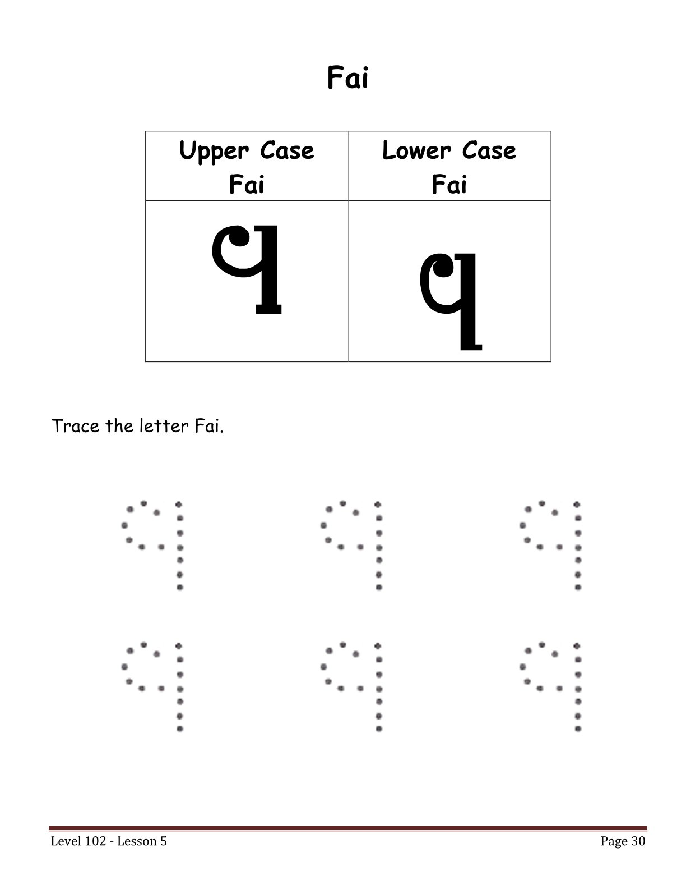

Level 102 • Tracing
Fai Tracing
Trace the Coptic letter Fai: Ϥ ϥ.
Tracing Practice
Use your mouse, finger, or stylus to trace directly on the worksheet. Clear the drawing and practice again as many times as you like.

Trace the Coptic letter Fai: Ϥ ϥ.
Use your mouse, finger, or stylus to trace directly on the worksheet. Clear the drawing and practice again as many times as you like.
